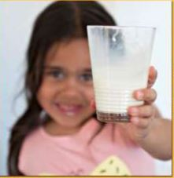

Health
 | |
| Mangiri | Nhoonyara |
| Well, healthy | Restored to health; surviving |
| Mooriri | Waiirridhi | Nhoonyaridhi |
| In good health, well, healthy | To be in good health | To recover; to survive |
| Mooriridhi | Goolarnoo | Wabilya |
| To be healthy; to be well | Healthy; still, yet | Better; restored to health |
|  |